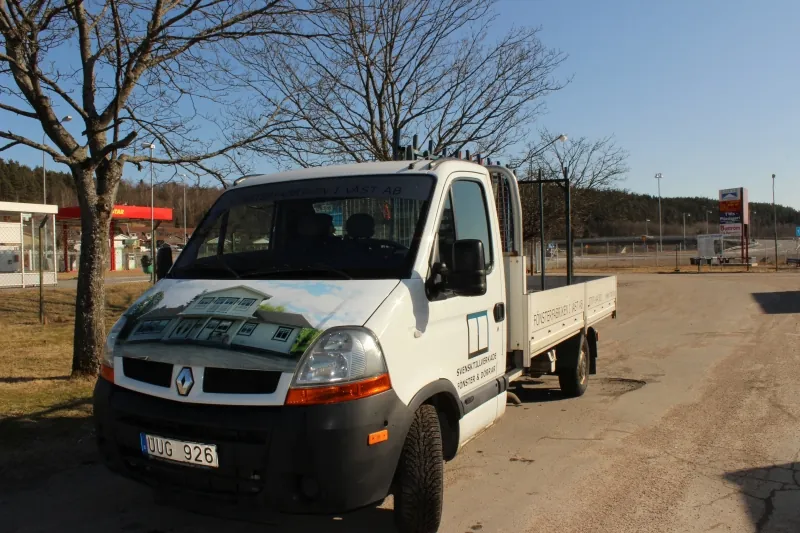

Information om frakt och leverans
Hämta själv i Lilla Edet eller låt oss leverera med egen lastbil till närliggande områden.

01Egen transport
Kommer du med egen transport ska du tänka på att ta med tillräckligt med spännband och kartong. Fönster och dörrar ska köras stående.
I priset ingår lastning med truck. Om ert transportmedel inte är avsett för den typen av lastning, ta med hjälp eller beställ lastningshjälp i förväg. Lastning kostar 250 kr + moms per timme och person, minsta debitering 30 minuter.
Specialtillverkade pallar kan beställas i förväg.
02Leverans med vår lastbil
Vi har egen lastbil och erbjuder leverans av fönsterpartier till närliggande områden – begär offert för leverans.
I priset ingår 30 minuter för avlastning på plats, som ordnas av kunden; föraren får inte hjälpa till på grund av ansvarsfördelning. Tid därutöver debiteras med 250 kr + moms per påbörjad timme. Har kunden beställt montering hjälper montörerna till att lasta av.
Vid behov står kunden för kostnaden för kran, truck eller liknande. Är transportsträckan väldigt lång kan du begära en prisoffert på frakten.


Berätta vad du planerar – vi tar fram en offert.
Allt tillverkas på beställning i vår fabrik i Lödöse. Välkommen att besöka utställningen i Lilla Edet, eller skicka en förfrågan direkt.